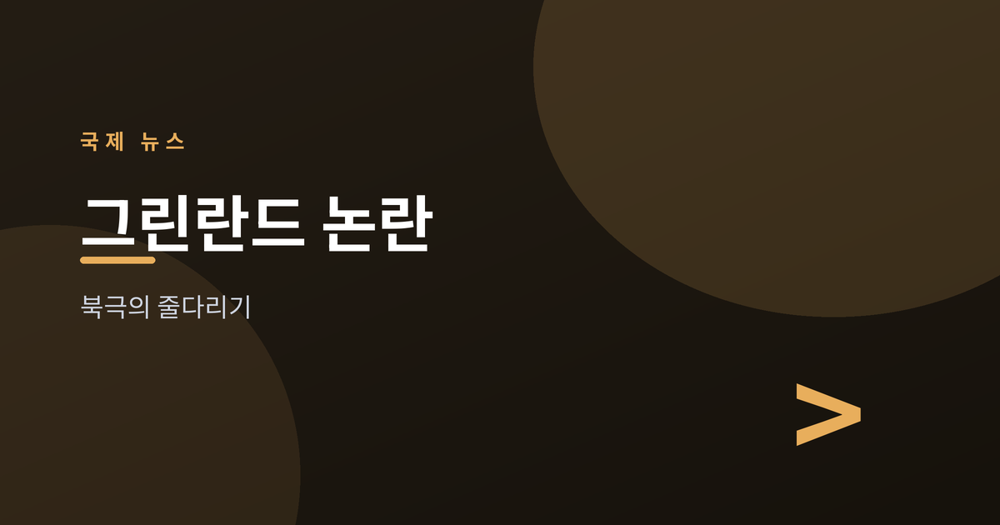
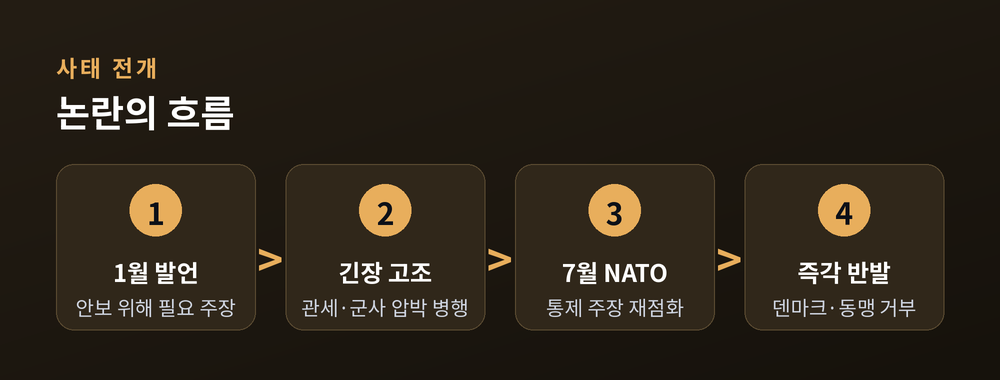
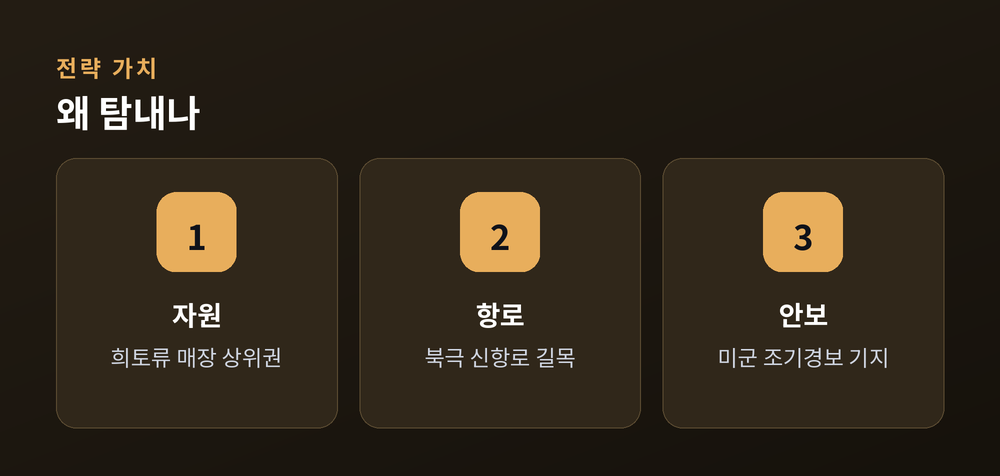
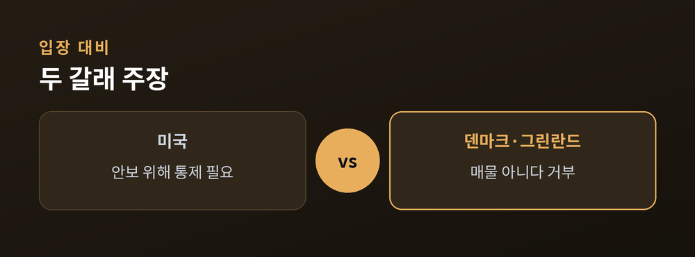
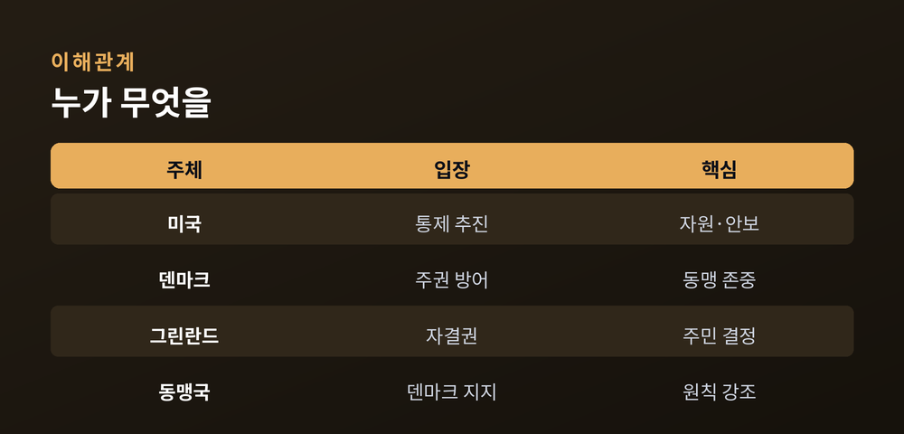

트럼프의 재점화와 덴마크·그린란드의 거부

이번 글에서는 다시 불붙은 그린란드 논란을 정리해 보겠습니다.
2026년 7월 8일 터키 앙카라에서 열린 NATO 정상회의가 무대였습니다. 도널드 트럼프 미국 대통령은 이 자리에서 그린란드를 미국이 통제해야 한다는 주장을 되풀이했습니다.
덴마크와 그린란드는 곧바로 선을 그었습니다. "그린란드는 매물이 아니"라는 답이었습니다. 무슨 일이 있었고, 왜 세계가 이 얼음섬을 주목하는지 차분히 살펴보겠습니다.
발단은 올해 1월이었습니다. 트럼프 대통령은 "안보를 위해 그린란드가 절대적으로 필요하다"고 말했습니다. 이후 논란은 관세와 군사 긴장으로 번졌습니다.
이번 NATO 정상회의에서 그는 수위를 다시 높였습니다. 폭스뉴스 등에 따르면 트럼프 대통령은 "세계 안보를 위해 그린란드는 덴마크가 아니라 미국이 통제해야 한다"고 밝혔습니다.
논란이 커진 이유는 장소에 있습니다. AP통신은 NATO가 회원국 영토를 함께 지키는 동맹이라는 점을 짚었습니다. 그 동맹의 정상회의에서, 한 회원국이 다른 회원국의 영토를 요구한 셈입니다.

그린란드는 세계에서 가장 큰 섬입니다. 대부분이 얼음으로 덮여 있지만, 그 아래에 담긴 가치가 큽니다.
첫째는 자원입니다. CSIS와 CNBC 등은 그린란드가 희토류 매장량 세계 상위권이라고 전합니다. 희토류는 반도체와 첨단 무기에 쓰입니다. 지금은 중국이 세계 생산의 약 80%를 쥐고 있습니다. 미국이 그 의존을 낮추려는 배경입니다.
둘째는 항로입니다. 기후변화로 북극 얼음이 녹으면서 새 항로가 열리고 있습니다. 그린란드는 그 길목에 있습니다.
셋째는 안보입니다. 그린란드에는 미군 피투피크 우주기지가 있습니다. 미사일 조기경보를 맡는 시설입니다. 자원·항로·안보가 한 섬에 겹쳐 있는 셈입니다.

메테 프레데릭센 덴마크 총리의 답은 단호했습니다. 그는 그린란드가 "매물이 아니"며, "결코 일어나지 않을 일"이라고 못 박았습니다.
동시에 방어 의지도 밝혔습니다. 유로뉴스에 따르면 프레데릭센 총리는 "우리 영토를 포함해 NATO의 모든 곳을 지킬 준비가 돼 있다"고 말했습니다.
그린란드 쪽 목소리도 분명합니다. 무테 에게데 그린란드 측 인사는 "그린란드의 미래는 그린란드 국민이 결정해야 한다"는 입장을 거듭 밝혀왔습니다.
법적으로 그린란드는 덴마크 왕국의 자치령입니다. 2009년 자치정부법에 따라 자원과 내정을 스스로 다룹니다. 외교와 국방은 덴마크가 맡습니다. 독립으로 가는 절차도 법에 담겨 있습니다.

이 사안이 무거운 이유는 파장이 넓기 때문입니다. 미국과 유럽의 신뢰, 그리고 북극 질서가 함께 걸려 있습니다.
동맹의 결속이 첫 번째입니다. 회원국끼리 영토를 요구하는 모습은 NATO의 기본 원칙과 부딪칩니다. 아이슬란드 총리는 "그린란드는 그린란드 국민의 것"이라며 덴마크 편에 섰습니다.
북극 전략이 두 번째입니다. 러시아와 중국도 북극에 눈독을 들이고 있습니다. 미국은 이 지역에서 밀리지 않으려 합니다. 다만 방식이 동맹의 반발을 부르는 점이 딜레마입니다.
한국에도 남의 일만은 아닙니다. 북극항로가 열리면 물류 지형이 바뀝니다. 그래서 여러 나라가 이 줄다리기를 지켜보고 있습니다.

당장 결론이 나기는 어려워 보입니다. 그린란드·덴마크·미국 3자 대화가 오갔지만, 자결권을 둘러싼 근본 이견이 남아 있다고 전해집니다.
시나리오는 대체로 셋으로 좁혀집니다. 현상 유지, 미국의 안보·경제 협력 확대, 그리고 그린란드의 장기적 독립 논의입니다. 매입이나 병합은 현실성이 낮다는 평가가 많습니다.
관건은 그린란드 주민의 뜻입니다. 여론조사에서 다수는 미국 편입에 부정적이었습니다. 결정권은 결국 그 섬에 사는 사람들에게 있습니다.
정리하면 이렇습니다. 자원과 항로와 안보가 얽힌 자리에서, 강대국의 욕구와 작은 자치령의 자기결정권이 맞서고 있습니다.
한쪽의 손을 들기보다, 사실을 있는 그대로 지켜보는 편이 옳겠습니다. 어느 쪽이 옳으냐고 물으신다면, 답은 그린란드 국민의 선택에 달렸다고 말씀드리겠습니다.
참고: AP통신, 로이터, 폭스뉴스, 유로뉴스, CSIS, CNBC, 한국일보